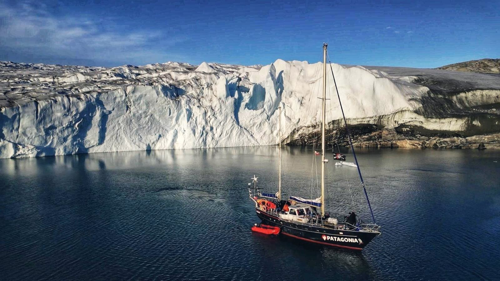

82°N In progress
S/Y Patagonia

High Arctic Expedition
Iceland to Ellesmere Island by way of the west coast of Greenland, then a basecamp at Tanquary Fjord and a ski-mountaineering push onto the glacier to climb Mount Barbeau — and, a hundred kilometres south-west of it, a peak that has never been climbed by anybody.
Ellesmere is the tenth largest island on earth and has a hundred and fifty permanent residents. Tanquary Fjord lies 720 km from the North Pole.
Route
Reykjavík → Nuuk → Qaanaaq → Ellesmere → Pond Inlet → Sisimiut → Qaqortoq → Reykjavík
5,626 nautical miles · 21 days ashore